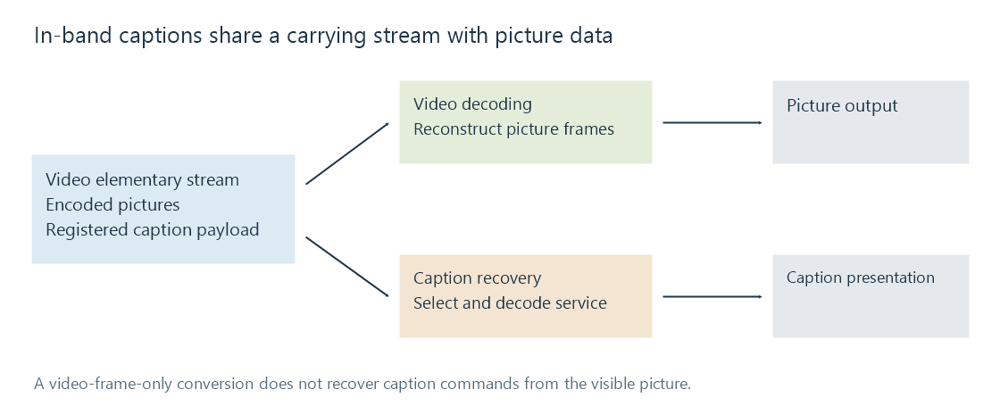

In-band captions
In-band captions are caption data carried within another media elementary stream and must be extracted and interpreted separately from its visible pictures.
In-band captions travel inside another elementary stream, commonly video. A media inspector can therefore find caption services within a video track even when the container lists no separate subtitle track.
The caption data is still separate information from the picture's visible pixels. A consumer extracts its commands/characters and renders the resulting caption presentation.

The carrying layer matters
ATSC's MPEG-2 video provisions define caption carriage in video user data. Other specified video paths use supplemental enhancement information, or SEI, to carry registered caption data. The applicable video and carriage standard defines the packet structure.
That is different from a separately multiplexed subtitle elementary stream, such as a DVB subtitle service in a transport stream. Both are within the delivered media, but only the former is in-band within the other elementary stream.
The term “embedded” is sometimes used loosely for either situation. Naming the precise carrying layer avoids that ambiguity.
Service selection happens after discovering caption data
A video stream can contain more than one caption service. The consumer must identify the intended service, recover its timed data and interpret its presentation model.
| Observation | What it establishes |
|---|---|
| Video stream contains caption data | A caption payload exists in that carrying stream |
| Caption service is selected | A particular content service was chosen |
| Caption commands are decoded | The service's presentation state was reconstructed |
| Captions are visible | The state was successfully drawn/composed at the required time |
One observation does not substitute for the next. Successfully decoding the video picture, for example, does not prove that caption commands were extracted.
Re-encoding pictures does not automatically preserve the payload
A video decoder can output frames without exposing caption information to the subsequent encoder. An encoder rebuilding video from those frames cannot recover hidden caption data simply by looking at the picture.
A conversion can preserve/reinsert a supported caption payload, extract it into another timed representation, or render it into the video. These are deliberate routes with different resulting properties.
For an Emby recording or streamed source, investigate the caption service and the actual delivered output. A source with captions and a converted output without them can both have correct-looking video. The comparison needs to include the data carried with the video, rather than only its visible frames.
HLS also distinguishes separate subtitle renditions from identified closed-caption services carried in media. A caption service declaration is not a URL to an external WebVTT file.